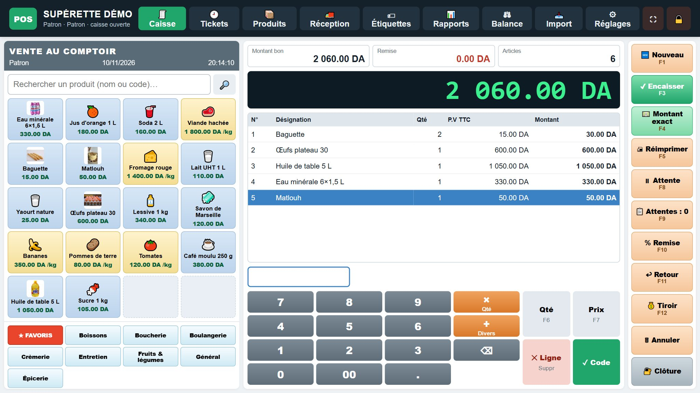

La caisse de votre magasin, simple comme un ticket.
Bipos encaisse, lit les étiquettes de la balance, imprime vos étiquettes de prix et suit votre stock. Il tourne sur le PC du magasin, sans Internet, et vos caissiers l'apprennent en une matinée.
برنامج الكاشير لمحلك: بيع، ميزان، ملصقات الأسعار والمخزون
Windows 10 ou 11 · 6,5 Mo · notes de version et empreinte SHA-256
Ce que voient vos caissiers
Ces captures viennent du logiciel lui-même, rempli avec un magasin de démonstration.

Fait pour le comptoir
Tout ce qu'il faut pour vendre vite et savoir où en est le magasin, sans écran inutile.
Encaisser en deux gestes
Scannez ou touchez un produit, Entrée encaisse le montant exact. Tickets en attente, retours, remise réservée au patron.
La balance parle à la caisse
Les articles au kilo partent vers la balance Aclas par le réseau. L'étiquette de la balance se scanne à la caisse avec le bon poids et le bon prix.
Étiquettes de prix
Trois formats, avec code-barres, poids net et ingrédients. Un produit sans code-barres en reçoit un automatiquement.
Stock suivi tout seul
Chaque vente, réception de fournisseur ou perte met le stock à jour. Alertes quand un produit manque, soldes fournisseurs.
Caisse sous contrôle
Code PIN par caissier, ouverture et clôture de caisse avec écart de caisse, journal des actions sensibles.
Vos données restent au magasin
Rien ne part sur Internet. Sauvegarde à chaque clôture et au démarrage, et une copie sur clé USB si vous le voulez.
De l'appel à la première vente
Pas de compte à créer, pas d'abonnement à gérer en ligne.
- Vous nous écrivezSur WhatsApp : le type de magasin, le nombre de produits, votre matériel.
- On installeSur le PC de votre caisse, depuis une clé USB, sans Internet.
- On reprend vos produitsDepuis votre fichier Excel : noms, codes-barres, prix, codes balance.
- Vous vendezOn montre la caisse à vos caissiers et on reste joignable sur WhatsApp.
Le matériel que vous avez déjà
Bipos fonctionne avec le matériel courant des commerces.
- PC Windows 10 ou 11
- Écran tactile ou souris
- Imprimante ticket 80 mm
- Tiroir-caisse
- Lecteur de code-barres
- Balance Aclas LS2 / LS6
- Imprimante d'étiquettes
Parlons de votre magasin
Scannez un QR code avec votre téléphone : WhatsApp s'ouvre avec le message prêt à envoyer. On vous répond pour une démonstration ou une installation.